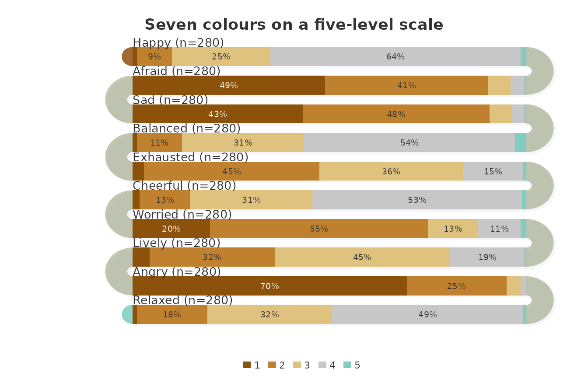
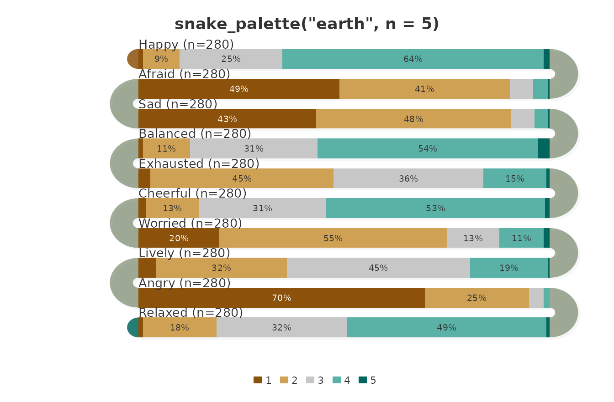
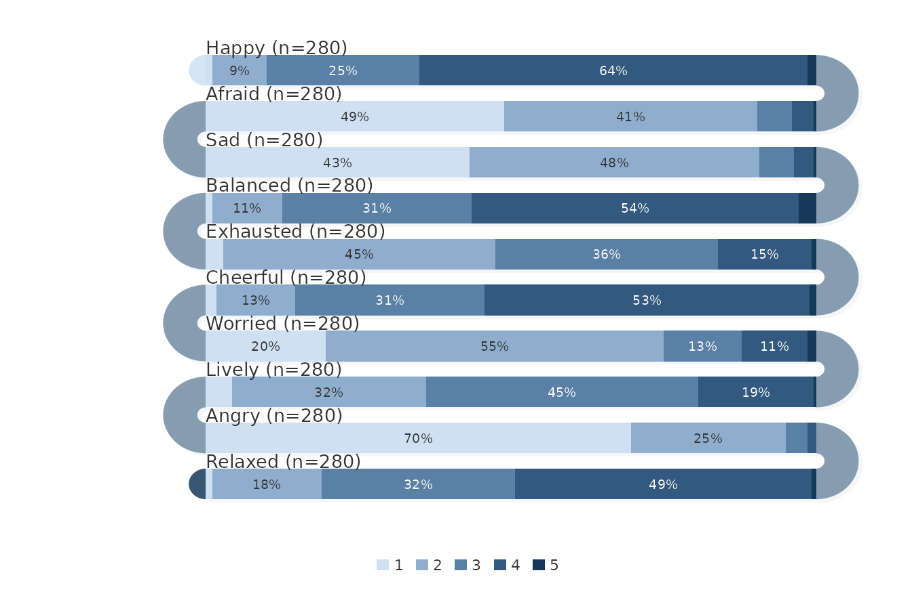
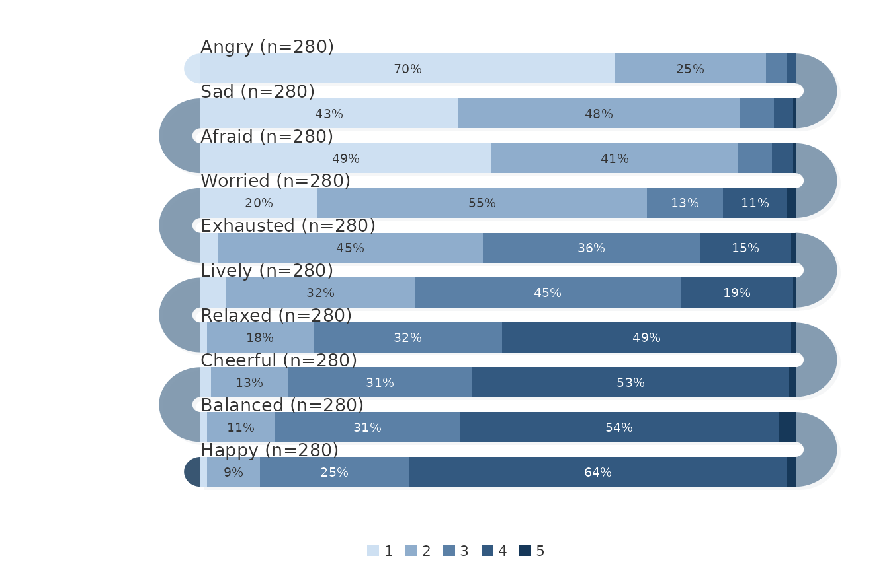
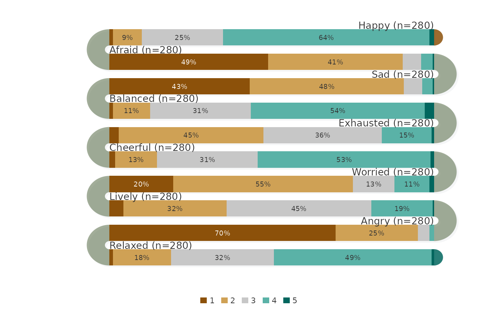
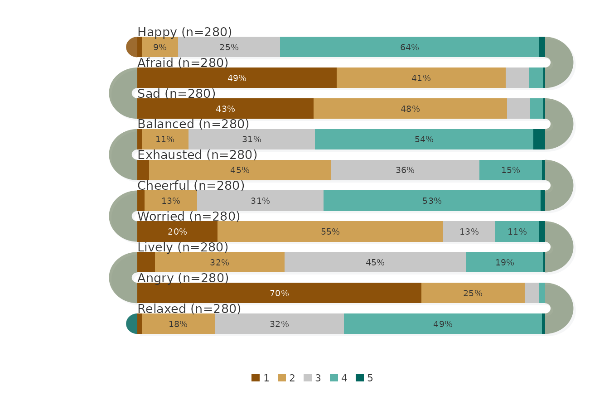
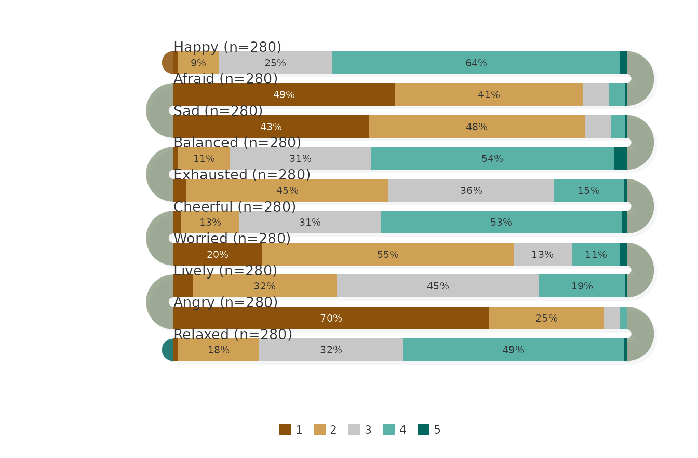

Palettes, reading order and layout
Written by Mohammed Saqr and Sonsoles López-Pernas
Source:vignettes/articles/palettes-and-layout.Rmd
palettes-and-layout.RmdA snake plot makes three kinds of design decision on the reader’s behalf. The colour scale decides whether a response scale is read as two opposing sides around a neutral midpoint or as a single ordered intensity. The reading order decides in which direction each band is read and on which side the first band starts. The geometry (band height, gap and width) decides the aspect ratio of the figure and how much of the page it takes. Each decision has a default, and each default is wrong for some data.
This guide covers the built-in palettes
(snake_palette(), snake_palettes), how many
colours a plot uses, the difference between
survey_sequence() and sequential_dist(), the
ordering of items (sort_by), the reading order
(flow, start_from), the label position
(label_align), and the geometry (band_height,
band_gap, plot_width). Reading order for
time-ordered data is also shown in the
sequences guide and the activity
guide.
Data
ema_emotions holds the person-level emotion ratings of
the students in an experience sampling study (Neubauer & Schmiedek,
2024; data CC-BY 4.0 at https://osf.io/bhq3p): each student’s mean rating of
each emotion over the study, rounded to the 1–5 scale.
- Respondent: one row per student.
-
Items:
Happy,Afraid,Sad,Balanced,Exhausted,Cheerful,Worried,Lively,Angry,Relaxed— how strongly the emotion was felt, 1 (not at all) to 5 (extremely).
dim(ema_emotions)
#> [1] 280 10
head(ema_emotions)
#> Happy Afraid Sad Balanced Exhausted Cheerful Worried Lively Angry Relaxed
#> 1 4 2 2 4 3 3 3 3 1 4
#> 2 4 1 2 3 4 4 2 3 1 3
#> 3 3 1 2 4 4 3 2 2 1 4
#> 4 4 1 1 3 3 4 2 2 1 3
#> 5 4 2 2 4 2 4 2 3 2 3
#> 6 2 2 2 3 2 2 2 2 2 3The data hold 280 respondents and 10 items. The legends below show the response levels as the numbers 1 to 5.
The built-in palettes
snake_palettes is a named list of ten palettes of seven
anchor colours each; snake_palette() returns one of them
interpolated to n colours.
names(snake_palettes)
#> [1] "classic" "earth" "ocean" "sunset" "berry" "blues" "greens" "grays"
#> [9] "warm" "viridis"
snake_palette("earth", n = 5)
#> [1] "#8C510A" "#CFA155" "#C7C7C7" "#5AB2A7" "#01665E"
snake_palette("blues", n = 5)
#> [1] "#EFF3FF" "#B2D2E8" "#6BAED6" "#3181BD" "#084594"The five-colour earth palette runs from brown through a
grey midpoint (#C7C7C7) to teal: a diverging palette. The
five-colour blues palette runs from near-white to dark
blue: a sequential palette. The difference can be measured rather than
judged by eye. The CIE L* lightness of a colour runs from 0 (black) to
100 (white); the next chunk converts every palette, interpolated to five
colours, to L* with grDevices::convertColor() and tabulates
it by palette and level.
swatches <- data.frame(
palette = rep(names(snake_palettes), each = 5),
level = rep(seq_len(5), times = length(snake_palettes)),
colour = unlist(lapply(names(snake_palettes), snake_palette, n = 5))
)
lab <- with(swatches, convertColor(t(col2rgb(colour)) / 255,
from = "sRGB", to = "Lab"))
swatches <- cbind(swatches, round(lab))
xtabs(L ~ palette + level, data = swatches)
#> level
#> palette 1 2 3 4 5
#> berry 45 71 85 77 54
#> blues 96 83 68 52 30
#> classic 39 65 84 67 42
#> earth 40 69 80 67 38
#> grays 97 82 62 42 15
#> greens 96 85 73 57 33
#> ocean 48 69 89 76 49
#> sunset 48 71 86 61 27
#> viridis 91 77 64 49 36
#> warm 97 82 70 56 33Two families are visible in the table. In berry,
classic, earth, ocean and
sunset the lightness rises from level 1 to the grey level 3
(L* 80 to 89) and falls again towards level 5: the two ends are dark and
the middle is light, so distance from the midpoint is carried by
lightness and the side of the midpoint by hue. In blues,
grays, greens, viridis and
warm the lightness falls monotonically from level 1 (L* 91
to 97) to level 5 (L* 15 to 36), so the order of the levels is carried
by lightness alone. The arms of the diverging palettes are not all
balanced: in sunset level 1 has L* 48 and level 5 has L*
27, so the high end is darker than the low end, whereas
earth (40 against 38), classic (39 against 42)
and ocean (48 against 49) are close to symmetric. This
guide makes no claim about how any palette appears to readers with a
colour-vision deficiency; that would require a simulation that is not
shown here.
Pass the number of levels
survey_snake(), survey_sequence() and
sequential_dist() use only the first
length(levels) colours of colors.
snake_palette() returns seven colours by default, so a
five-level scale given the default palette uses the first five of
them.
snake_palette("earth")
#> [1] "#8C510A" "#BF812D" "#DFC27D" "#C7C7C7" "#80CDC1" "#35978F" "#01665E"
head(snake_palette("earth"), 5)
#> [1] "#8C510A" "#BF812D" "#DFC27D" "#C7C7C7" "#80CDC1"
snake_palette("earth", n = 5)
#> [1] "#8C510A" "#CFA155" "#C7C7C7" "#5AB2A7" "#01665E"The first five of the seven earth colours end with the
grey midpoint #C7C7C7 at position 4 and the light teal
#80CDC1 at position 5: on a five-level scale the neutral
colour would be assigned to level 4 (quite) and the darkest
teal would never be used. With n = 5 the grey is at
position 3, the midpoint of the scale, and both ends are the darkest
colours.
survey_sequence(ema_emotions,
colors = snake_palette("earth"),
title = "Seven colours on a five-level scale")
survey_sequence(ema_emotions,
colors = snake_palette("earth", n = 5),
title = "snake_palette(\"earth\", n = 5)")
The two plots draw the same counts; only the colour assigned to each level differs. In the first, level 3 is drawn in the light sand colour and level 4 in grey; in the second, level 3 is grey and the scale is symmetric around it.
Scales with and without a neutral midpoint
A diverging palette states that the middle level is neutral and that the two ends are opposites. That is true of an agreement scale (disagree, neutral, agree) but not of an intensity scale: rating anger as Moderately is not a neutral point between two kinds of anger, but more anger than Slightly. The emotion items are intensity ratings. The share of respondents at each level of each item:
round(100 * prop.table(xtabs(~ ind + values, data = stack(ema_emotions)),
margin = 1))
#> values
#> ind 1 2 3 4 5
#> Happy 1 9 25 64 1
#> Afraid 49 41 6 4 0
#> Sad 43 48 6 3 0
#> Balanced 1 11 31 54 3
#> Exhausted 3 45 36 15 1
#> Cheerful 2 13 31 53 1
#> Worried 20 55 13 11 1
#> Lively 4 32 45 19 0
#> Angry 70 25 4 1 0
#> Relaxed 1 18 32 49 1The negative emotions are concentrated at the bottom of the scale:
70% of the respondents rated Angry at level 1 and 1% above
level 3, and Afraid and Sad have 49% and 43%
at level 1. The positive emotions are concentrated at level 4 (64% for
Happy, 53% for Cheerful, 54% for
Balanced). For such a scale, sequential_dist()
draws the same stacked bars as survey_sequence() with a
single-hue ramp, so a darker segment means a stronger emotion.
sequential_dist(ema_emotions)
The default ramp is a blue (hue = 210); hue
selects another hue, and colors accepts any five colours,
for example snake_palette("greens", n = 5).
survey_sequence() with a diverging palette is the right
choice for agreement scales and other bipolar scales;
sequential_dist() for intensity and frequency scales.
Ordering the items
The input order of the items is rarely the order in which a reader
wants to compare them. sort_by = "mean" orders the bands by
ascending item mean; sort_by = "net" by the share of
responses above the scale midpoint minus the share below it. Both
scores, computed directly and sorted with base R’s
sort_by():
item_scores <- data.frame(
item = names(ema_emotions),
mean = colMeans(ema_emotions),
net = colMeans(ema_emotions > 3) - colMeans(ema_emotions < 3)
)
sort_by(item_scores, ~ mean)
#> item mean net
#> Angry Angry 1.37 -0.936
#> Afraid Afraid 1.65 -0.864
#> Sad Sad 1.70 -0.871
#> Worried Worried 2.19 -0.629
#> Exhausted Exhausted 2.66 -0.314
#> Lively Lively 2.79 -0.168
#> Relaxed Relaxed 3.30 0.304
#> Cheerful Cheerful 3.39 0.396
#> Balanced Balanced 3.46 0.439
#> Happy Happy 3.55 0.550
sort_by(item_scores, ~ net)
#> item mean net
#> Angry Angry 1.37 -0.936
#> Sad Sad 1.70 -0.871
#> Afraid Afraid 1.65 -0.864
#> Worried Worried 2.19 -0.629
#> Exhausted Exhausted 2.66 -0.314
#> Lively Lively 2.79 -0.168
#> Relaxed Relaxed 3.30 0.304
#> Cheerful Cheerful 3.39 0.396
#> Balanced Balanced 3.46 0.439
#> Happy Happy 3.55 0.550The two orders agree except for one pair: by mean,
Afraid (1.65) comes before Sad (1.70); by net
score, Sad (−0.871) comes before Afraid
(−0.864). The mean uses every level, the net score only whether a
response lies above or below the midpoint; they diverge when two items
have similar means but differ in how many responses sit exactly at the
midpoint.
sequential_dist(ema_emotions, sort_by = "net")
The bands now run from Angry, the item with the lowest
net score, to Happy, the item with the highest.
Reading order: flow and start_from
flow = "snake" (the default of the survey functions)
alternates the direction of the bands, as in a boustrophedon;
flow = "natural" reads every band in the same direction.
start_from decides on which side the first band begins. The
survey functions return their layout invisibly, and
as.data.frame() gives its bands table, which
records the geometry of each band: direction is the side
the path enters from (which always alternates, because the arcs
alternate), and read_direction is the direction in which
the content of the band is read.
natural <- survey_sequence(ema_emotions,
colors = snake_palette("earth", n = 5),
flow = "natural", label_align = "left")
subset(as.data.frame(natural), select = c(i, direction, read_direction))
#> i direction read_direction
#> 1 0 ltr ltr
#> 2 1 rtl ltr
#> 3 2 ltr ltr
#> 4 3 rtl ltr
#> 5 4 ltr ltr
#> 6 5 rtl ltr
#> 7 6 ltr ltr
#> 8 7 rtl ltr
#> 9 8 ltr ltr
#> 10 9 rtl ltrWith flow = "natural" the direction column
alternates between ltr and rtl while
read_direction is ltr for all ten bands.
mirrored <- survey_sequence(ema_emotions,
colors = snake_palette("earth", n = 5),
start_from = "right", label_align = "direction")
subset(as.data.frame(mirrored), select = c(i, direction, read_direction))
#> i direction read_direction
#> 1 0 rtl rtl
#> 2 1 ltr ltr
#> 3 2 rtl rtl
#> 4 3 ltr ltr
#> 5 4 rtl rtl
#> 6 5 ltr ltr
#> 7 6 rtl rtl
#> 8 7 ltr ltr
#> 9 8 rtl rtl
#> 10 9 ltr ltrWith the default flow = "snake" and
start_from = "right", the first band is read from right to
left (rtl) and the reading direction alternates with the
path. label_align = "direction" places each item label on
the side where its band begins to be read, whereas "left"
(the default) and "right" place all labels on one side. In
survey plots each band is an item, and the segments within a band follow
the order of the scale, not of time, so the response levels are drawn
from left to right in every band; reverse_rtl = TRUE
mirrors them on right-to-left bands. When the content of a band is
ordered in time, as in sequence_snake() or
activity_snake(), the reading direction changes what the
reader sees; see the sequences guide.
Geometry and figure size
All geometry is in plot units: band_height is the height
of a band, band_gap the white space between bands and
plot_width the length of a band. The canvas grows with all
three; as.data.frame() with what = "canvas"
gives its size.
default_layout <- survey_sequence(ema_emotions,
colors = snake_palette("earth", n = 5))
as.data.frame(default_layout, what = "canvas")
#> width height
#> 1 692 506
compact_layout <- survey_sequence(ema_emotions,
colors = snake_palette("earth", n = 5),
band_height = 20, band_gap = 8,
plot_width = 400)
as.data.frame(compact_layout, what = "canvas")
#> width height
#> 1 570 372The default layout of the ten items is 692 by 506 units, an aspect
ratio of about 1.37; the compact layout is 570 by 372 units, about 1.53.
The canvas is scaled to the graphics device, so the ratio of
fig.width to fig.height should be close to the
ratio of the canvas width to its height; otherwise white space appears
on two sides of the plot. Thinner bands and narrower gaps are the way to
keep a plot of many items from becoming tall: here they reduce the
height by 134 units, about a quarter.
Summary
- Pass
nequal to the number of response levels tosnake_palette(); the survey functions use only the firstlength(levels)colours. - Use a diverging palette with
survey_snake()orsurvey_sequence()for bipolar scales with a neutral midpoint, andsequential_dist()or a sequential palette for intensity and frequency scales. - Order items with
sort_by = "mean"or"net"; the two differ only where items have close means but different shares at the midpoint. -
flow = "natural"reads every band in the same direction;flow = "snake"alternates;start_fromselects the side of the first band;label_align = "direction"follows the reading direction. - Thinner bands (
band_height), narrower gaps (band_gap) and shorter bands (plot_width) shrink the canvas; match the figure’s aspect ratio to it.
Reference
Neubauer, A. B., & Schmiedek, F. (2024). Approaching academic adjustment on multiple time scales. Zeitschrift für Erziehungswissenschaft, 27(1), 147–168. https://doi.org/10.1007/s11618-023-01182-8